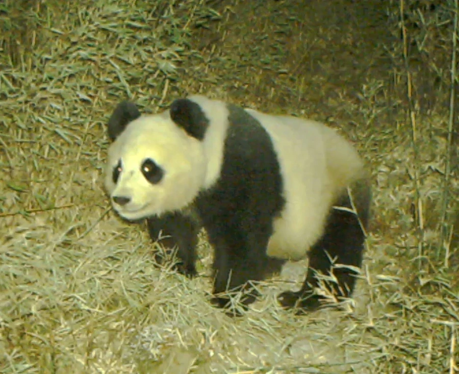

哺乳动物 · 动物界
大熊猫 Ailuropoda melanoleuca

中国特有的珍稀兽类，黑白相间的毛色、圆胖的体形与嗜食竹子的习性，使其成为全球最具辨识度的旗舰物种。
- 分类
- 门脊索动物门纲哺乳纲目食肉目科熊科属大熊猫属
- 栖息环境
- 海拔 1200–3400 米的亚高山针阔混交林与竹林，喜阴凉潮湿的坡地
- 地理分布
- 中国四川、陕西、甘肃三省的岷山、邛崃山、秦岭等山区
- 保护级别
- IUCN 易危（VU）；中国国家一级保护动物
物种志
大熊猫体型肥硕似熊，头圆尾短，成年个体体长约 120–180 cm，全身黑白分明，眼圈、耳缘和四肢为黑色，在密林中十分醒目。它的前掌有一块由腕骨特化而成的伪拇指，可像钳子般夹住竹竿；消化道仍是食肉动物的短肠结构，对植物纤维利用率很低，只能靠大量进食来弥补。
野生大熊猫栖息在海拔 1200–3400 米的亚高山针阔混交林与竹林，食物约 99% 是竹子，也偶食小型兽类和鸟卵。它们多在晨昏活动，每天花 12–16 小时进食，吃掉 12–38 kg 竹叶、竹笋或竹秆。成年个体独居，仅繁殖季短暂相聚，每年 3–5 月发情，妊娠期 3–5 个月，每胎 1–2 仔，初生幼仔仅约 100 g。经多年保护，野外种群已恢复至约 1800 只，集中分布于四川、陕西、甘肃的山区。
形态与习性
- 食性约 99% 为竹子，偶食小型兽类、鸟卵与蜂蜜
- 体长120–180 cm，尾长约 10–16 cm
- 体重70–125 kg，雄性略大于雌性
- 寿命野外约 20 年，圈养可超过 30 年
- 繁殖3–5 月发情，妊娠期 3–5 个月，每胎 1–2 仔
- 活动节律晨昏活动，每天进食 12–16 小时
趣味知识
- 大熊猫的伪拇指由腕骨特化而成，能帮助它稳稳握住竹竿。
- 初生幼仔仅约 100 g，约为母亲体重的千分之一，眼睛尚未睁开。
- 竹子难以消化，大熊猫每天要排便数十次，进食时间长达 12–16 小时。
生态关系
- 捕食 → 毛竹 大熊猫以竹子为主食（植食）